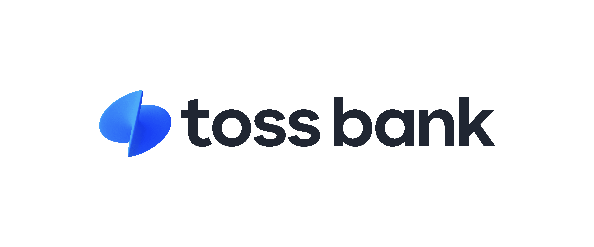

홈 > 브랜드 매거진 > 메가스터디
메가스터디
인터넷 강의로 사교육 시장을 재편한 온라인 교육 기업
산업 분야 브랜드·비즈니스 · 공개 등급 자료 기반 · 브랜드 평가 4 ★

한눈에 보는 브랜드
1999년 손주은이 오프라인 학원 강사 경험을 바탕으로 인터넷 강의 서비스를 시작했다. 당시 학원가는 물리적 수용 인원과 지역 제한이 컸는데, 인터넷을 통해 전국 수험생에게 동일한 강의를 제공하는 방식으로 이 문제를 해결하고자 했다.
스타강사를 영입해 콘텐츠 경쟁력을 확보하는 전략을 취했다. 2000년대 초 온라인 인프라 확산과 맞물려 빠르게 이용자를 늘렸다.
브랜드 아이덴티티
물리적 좌석 제약이 있는 서비스업을 디지털 콘텐츠로 전환할 때, 스타 개인(강사)의 콘텐츠 경쟁력이 플랫폼 성장의 핵심 변수로 작동한 사례다. 스타강사 콘텐츠와 온라인 유통을 결합해 지역 제한 없는 규모의 경제를 확보하는 방식으로 성장했다.
제품과 서비스
대표 제품과 서비스 정보는 편집 검수 후 공개됩니다.
타임라인
BI/CI 변천사
대표 로고대표 브랜드 마크함께 읽을 브랜드
 브랜드·비즈니스 · 편집 검수Monzo
브랜드·비즈니스 · 편집 검수Monzo몬조(Monzo)는 영국의 디지털 네오뱅크로, 물리적 지점 없이 스마트폰 앱만으로 운영되는 모바일 우선 은행이다. 형광에 가까운 산호색(핫 코랄) 카드를 상징으로 삼...
 브랜드·비즈니스 · 편집 검수Yahoo
브랜드·비즈니스 · 편집 검수Yahoo야후는 1994년 미국에서 출범한 인터넷 포털·미디어 기업으로, 검색 디렉터리에서 출발해 이메일·뉴스·금융·스포츠 등 폭넓은 온라인 서비스를 운영해 왔다. 1990년...
HC
현대카드DIVE
브랜드·비즈니스 · 자료 기반현대카드DIVE현대카드의 디자인·문화 콘텐츠 큐레이션 플랫폼
 브랜드·비즈니스 · 자료 기반카카오페이
브랜드·비즈니스 · 자료 기반카카오페이카카오페이(Kakao Pay)는 카카오 계열의 모바일 간편결제·디지털 금융 기업으로, 2014년 서비스 시작 후 2017년 분사했다.

브랜드·비즈니스 · 자료 기반토스뱅크토스뱅크(Toss Bank)는 비바리퍼블리카(토스)가 모회사인 인터넷전문은행으로, 2021년 영업을 시작한 한국의 세 번째 인터넷은행이다.
 브랜드·비즈니스 · 자료 기반두손컴퍼니
브랜드·비즈니스 · 자료 기반두손컴퍼니장애인 고용을 사업 모델로 한 풀필먼트 소셜벤처
 브랜드·비즈니스 · 자료 기반키움증권
브랜드·비즈니스 · 자료 기반키움증권키움증권은 2000년 다우기술과 삼성물산 등이 출자해 키움닷컴증권으로 출범한 온라인 기반 증권사다. 2004년 코스닥, 2009년 유가증권시장에 상장했고 2006년...
 브랜드·비즈니스 · 자료 기반디캠프
브랜드·비즈니스 · 자료 기반디캠프은행권청년창업재단이 운영하는 스타트업 지원 공간·플랫폼